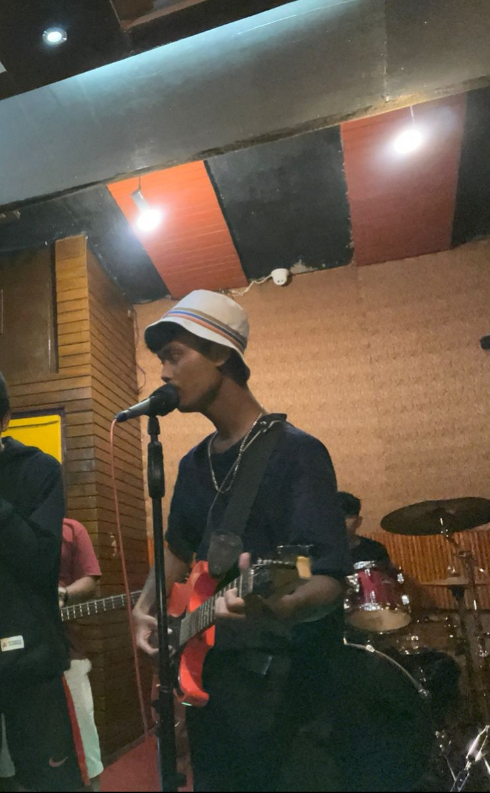

HOBI SAYA
 |
Menyanyi adalah hobi saya. Saya punya hobi, hobi saya ya,,,, lumayan banyak juga sihh.
Tapi saya akan menceritakan hobi yang paling saya sering lakukan. Ya…. Nggak sering-sering juga sihh.
Hobi saya yang satu ini adalah sing a song alias bernyanyi.
Kenapa aku suka bernyanyi? Karena bernyanyi dapat menenangkan hati dan fikiran karena kesibukan sehari-hari. Habis,, saya orangnya super sibuk.
Terutama mengerjakan tugas dari dosen yang membuat kepala menjadi tujuh keliling.
Suara saya ketika bernyanyi sih,, lumayan aja! Nggak bagus amat dan nggak fals-fals banget.
Tapi menurut saya suara saya enak didengar dan bagus karena saya mendengarnya sendiri entah kata orang lain hahaha.
Jadi kalau bernyanyi nggak bikin bosan aja suara saya. Saya biasanya bernyanyi ditempat yang tidak ada orangnya.
Karena saya biasanya bernyanyi dengan suara yang agak keras, sekalian melatih vocal saya sehingga saya dapat bernyanyi pada nada tinggi.
Juga ketika saya dikamar tidur, kalau mau tidur aja. Dan yang paling sering perjalanan saya ketika berangkat dan pulang kampus.
Hampir sama kayak orang gila gitu nyanyi sendirian terkadang juga ketawa sendiri karena dengar suara saya sendiri.
Kalau genre musik saya tidak tahu persis lebih suka yang mana, tapi biasanya saya lebih sering menyanyikan lagu pop dan dangdut.
Tapi aku agak bingung gitu soal genre music, soalnya kalau saya mendengarkan music, kayaknya sama rata gitu walaupun ternyata genrenya berbeda.
Kayak R&B dengan pop. Pokoknya agak susah membedakannya. Band favorit saya lumayan banyak.
Pokoknya kalau lagunya enak didengar, pasti saya akan suka dan sering-sering menyanyikannya.
Tapi saya lebih condong menyukai dangdut. Soalnya lagunya bagus-bagus dan mudah untuk berjoged bersama.
Apalagi ketika menunggu dosen saya dan kawan kawan menyanyikan lagu yang dari awal hingga ujung berbeda lagunya. Hahaha asyiknya bukan main